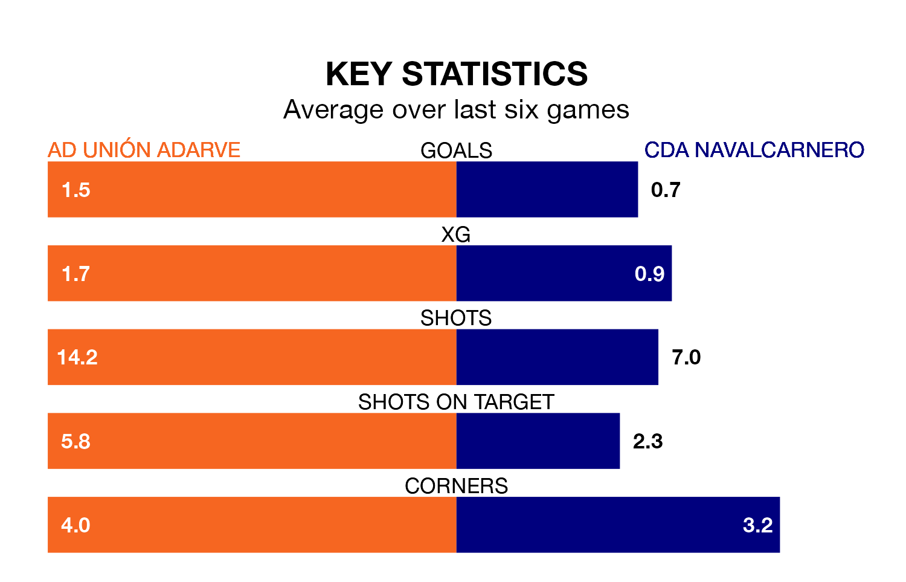

CDA Navalcarnero face AD Unión Adarve on Sunday seeking to protect their long unbeaten run in the Segunda División RFEF Group 5.
CDA Navalcarnero are unbeaten in six, with two wins and four draws, ahead of the 11am kick-off.
They face an Unión Adarve team who have won two and drawn one over the same number of games.
With 39 goals in 29 games so far this season, Unión Adarve are the league's third-highest scorers with 1.3 goals per game. But they are conceding more than average too, letting in 39 goals at a rate of 1.3 per game.
CDA Navalcarnero, meanwhile, are below average scorers, with 0.9 goals per game, compared to a league average of 1.1. They have conceded 1.1 goals per game.
In the last 10 years, Unión Adarve and CDA Navalcarnero have played each other on 11 occasions. Unión Adarve won five of them, CDA Navalcarnero four, and they drew twice.
On average, Unión Adarve scored 1.4 goals and CDA Navalcarnero 1.3 in those matches.
Their last meeting was on November 26, when Unión Adarve won 2-1 away.
The away team are 15th in the table after 29 games, of which they have won seven and drawn 12, earning 33 points.
The hosts are seven places ahead of CDA Navalcarnero in eighth, with 10 wins and 11 draws putting them on 41 points.
Unión Adarve's last match was on March 30, a 1-0 loss against CD Numancia.
CDA Navalcarnero drew 1-1 with SS Reyes last time out, on Sunday, with Alberto Gutiérrez Borondo on the scoresheet.
Updated: 16:41 (UTC), 04/04/24